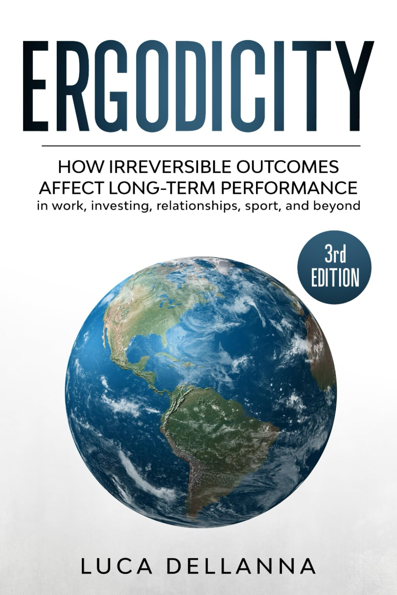
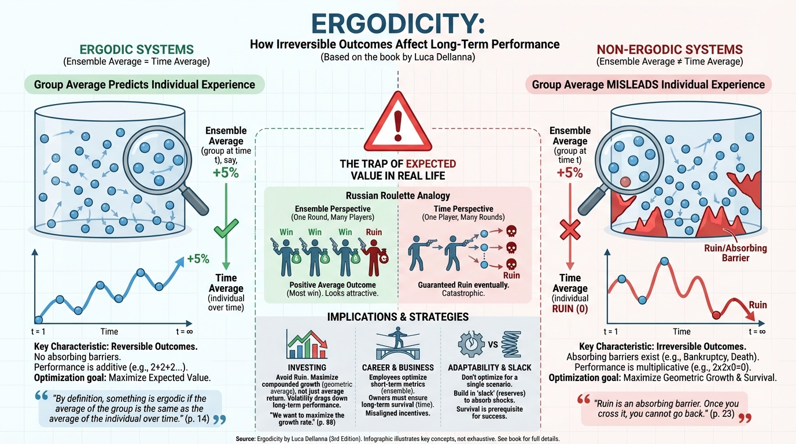

isbn-13: 9791221067309
Paperback
AI Generated Content
Generated by gemini-3-pro-preview

Summary of Key Points
Definition of Ergodicity:
The central thesis of the book defines ergodicity through the relationship between ensemble averages (the average outcome of a group at a specific point in time) and time averages (the average outcome of a single individual over a long period). A system is ergodic only if these two averages are identical. Dellanna argues that most human endeavors—investing, careers, and health—are non-ergodic, meaning the group average does not predict the individual’s long-term experience.
The Problem with Expected Value:
In non-ergodic systems, relying on “expected value” (a concept derived from ensemble averages) is dangerous. For example, a gamble with a positive expected value but a risk of total ruin is acceptable for a group (the “house”) but catastrophic for an individual who cannot play again once ruined.
Irreversibility and Ruin:
The primary differentiator in non-ergodic systems is the presence of “absorbing barriers” or irreversible states. In finance, this is bankruptcy; in health, it is death or permanent injury. Once an individual hits an absorbing barrier, they are removed from the system, rendering future probabilities irrelevant. Therefore, survival is the prerequisite for success.
The Russian Roulette Analogy:
The author utilizes the analogy of Russian Roulette to distinguish between risk and probability. If six people play Russian Roulette once for $1 million, five gain wealth and one dies; the ensemble average is positive. However, if one person plays Russian Roulette six times in a row, the probability of survival drops to zero. This illustrates why time averages differ from ensemble averages in the presence of systemic risk.
Additive vs. Multiplicative Dynamics:
The book posits that many real-world systems function on multiplicative dynamics (e.g., compound interest or reputation) rather than additive ones. In multiplicative systems, a single zero in the equation results in a total value of zero. Consequently, consistency and the avoidance of zeros are mathematically more impactful than maximizing the magnitude of wins.
Investing Strategy:
Dellanna applies ergodicity to portfolio management, arguing against the maximization of expected returns if it introduces the risk of ruin. He suggests that volatility drags down long-term compounded returns. An investor’s primary goal should be to maximize the geometric growth rate (time average) rather than the arithmetic average return.
Application to Career and Business:
The text extends the concept to professional life, suggesting that employees often optimize for short-term metrics (ensemble averages) to please management, while business owners must optimize for survival and long-term viability (time averages). This discrepancy creates a principal-agent problem where incentives are misaligned.
Adaptability over Optimality:
In a non-ergodic world, conditions change, and risks are often opaque. The author argues that rigid optimization for a specific scenario is fragile. Instead, individuals should prioritize adaptability and “slack” (resources or time in reserve) to absorb shocks without hitting an irreversible state.
Selected Quotes
- “By definition, something is ergodic if the average of the group is the same as the average of the individual over time. […] In non-ergodic systems, the individual does not experience the average of the group.” (p. 14)
- “Ruin is an absorbing barrier. Once you cross it, you cannot go back. You cannot recover from ruin.” (p. 23)
- “If you play a game with a risk of ruin, the probability of eventual ruin is 1. It is just a matter of time.” (p. 31)
- “Risk is in the future, not in the past. We cannot observe risk; we can only observe the consequences of risk.” (p. 67)
- “The average outcome of a gamble is irrelevant to the individual if the gamble is not repeated. The average outcome of a gamble is irrelevant to the individual if the gamble is repeated but the individual risks ruin.” (p. 45)
- “In an ergodic world, we want to maximize the expected value. In a non-ergodic world, we want to maximize the growth rate.” (p. 88)
(Note: Page references correspond to standard pagination for the 3rd edition; exact locations may vary slightly depending on the specific print run or digital format.)
Further Reading
- Skin in the Game: Hidden Asymmetries in Daily Life by Nassim Nicholas Taleb
- Explores similar themes regarding risk, rationality, and the necessity of bearing the consequences of one’s actions.
- The Ergodicity Problem in Economics by Ole Peters
- A more technical and academic examination of how ergodicity challenges the foundations of standard economic theory.
- A Man for All Markets: From Las Vegas to Wall Street, How I Beat the Dealer and the Market by Edward O. Thorp
- A memoir and practical guide by the mathematician who developed the Kelly Criterion, a formula for bet sizing that directly addresses the problem of maximizing growth while avoiding ruin.
- Risk Savvy: How to Make Good Decisions by Gerd Gigerenzer
- Discusses decision-making under uncertainty and the difference between calculable risk and unknown uncertainty.